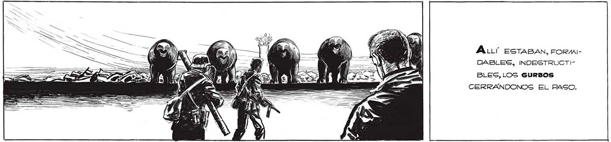
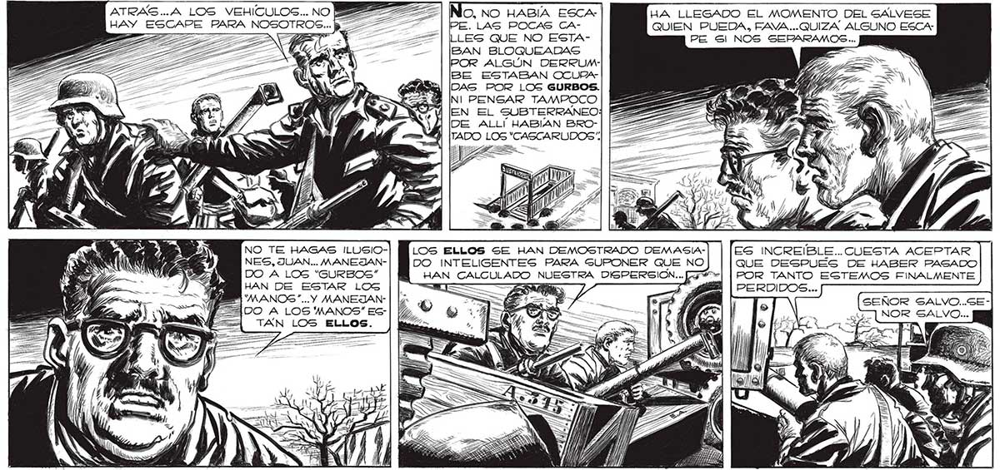

218 ÁA:LLí ESTABAN, FORMIDABLES, INDESTRUCTIBLES, LOS GURBOS CERRANDONOS EL PASO. 2 HA LLEGADO EL MOMENTO DEL SALVESE PE PARA NOSOTROS... QUIEN PUEDA, FAVA...QUIZA ALGUNO ESCA, TZ : PE Sl NOS SEPARAMOS... ZA FTE E € al el e ' lr ad A / ) NO TE HAGAS ILUSIO- LOS ELLOS SE HAN DEMOSTRADO DEMASIANES, JUAN... MANEJAN- DO INTELIGENTES PARA GUPONER QUE NO DO A LOS “GURBOS” HAN CALCULADO NUESTRA DISPERSION...] HAN DE ESTAR LOS == == Ga | PERDIDOS... PUMANOS”...Y MANEJAN-| lí. > JE E .. PS ' SEÑOR SALVO..SE4DO A LOS MANOS” EG- AO, DES == > AN ! mn ES INCREÍBLE.. CUESTA ACEPTAR QUE DESPUES DE HABER PASADO POR TANTO EGTEMOS FINALMENTE => NOR SALVO...

